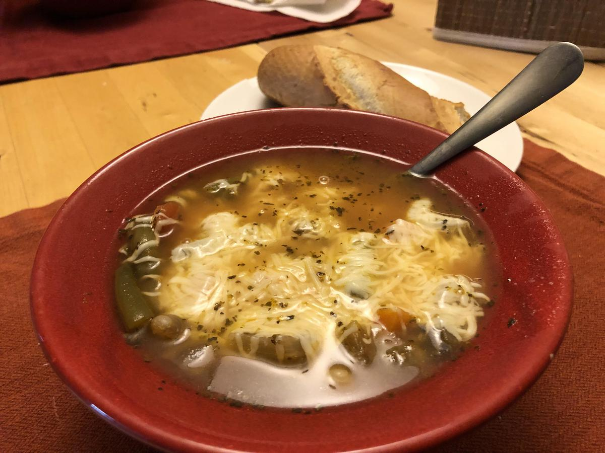

Based on Chrissy Teigen Cravings Hungry for More, pg. 50
Personal rating: 5 / 5

3 Tbsp olive oil
1 large yellow onion, cut into 1/2" dice
6 cloves garlic (3 tsp), diced
4 medium carrots, halved and coined
2 celery sticks, cut into 1/2" dice
3-4 cups vegetable or chicken broth
1 (28-oz) can of diced tomatoes (keep juice)
1 (15-oz) can cannellini (navy) beans, drained and rinsed
1 (15-oz) can green beans (keep juice)
1 tsp dried basil
1 tsp dried oregano
1.5 tsp salt
1/2 tsp black pepper
1/4 tsp red pepper flakes
2/3 cup pasta wheels (~1/2 cup elbow/macaroni)
1 cup Parmigiano-Reggiano cheese, plus more for garnish
Serve with baguette or toast